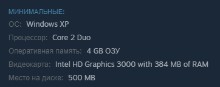

Научно-фантастический симулятор колонии под управлением ИИ-рассказчика.Сие творение создал один человек с ником Tynan Sylevster. Эта игра является доработкой Dwarf Fortress и Warhammer 40 000.
Cуть игры - построить колонию на обитаемой планете, население которой будет со временем увеличиваться, а может и не будет, все зависит от вас. Вам предстоит следить за всеми потребностями ваших колонистов, вроде бы все просто, но каждый колонист обладает определенным характером и возможностями (не магическими), тут придется настраивать режим дня и обязанности каждому колонисту. Для заядлых фермеров в игре можно высаживть множество видов культур и разводить экзотические и не очень виды скота. Для стратегов и любителей повоевать RimWorld предлагает продуманную систему боя и навороченый ИИ противников. Так же присутствует система медицины: на больничной койке или даже на полу, вы сможете отобрать у плененых противников парочку недостающих вам органов и пересадить их вашим колонистам или же продать на рынке.
Как только вам надоест ванильный геймплей, на сцену выходят моды, моды есть практически на все (кроме двухэтажных зданий): еще более реалистичная стрельба, каторги (можно сделать личный ГУЛАГ), инопланетные технологии, химические и биологические виды оружия - перечислять можно бесконечно долго.
Трейлер игры
Системные требования для винды и mac одинаковы.
